Manual de Usuario
Sitio Web Público + CRM Inmobiliario
| Nombre del sistema | Sistema Inmobiliario (Web pública + CRM) |
|---|---|
| Documento | Manual de Usuario |
| Versión del manual | 1.0 |
| Fecha de emisión | 23 de agosto de 2026 |
| Estado | Definitivo — basado en inspección directa del sistema real |
| Audiencia | Administradores, agentes inmobiliarios, asistentes y personal nuevo |
| Idioma | Español |
📌 Nota de veracidad: todo el contenido de este manual —pantallas, campos, botones, filtros, estados y permisos— fue verificado directamente sobre el código y la aplicación en ejecución. Cuando una función descrita en un requerimiento no existe en la versión actual del sistema, este manual lo indica explícitamente en un recuadro de advertencia, en lugar de inventar un comportamiento.
El sistema Inmobiliaria Prime está compuesto por dos aplicaciones que trabajan juntas:
Es la cara visible de la inmobiliaria en internet. Cualquier persona, sin necesidad de una cuenta, puede:
Es la herramienta interna de trabajo del equipo. Con una cuenta y contraseña, el personal de la inmobiliaria puede:
Toda la información que ve un visitante en el sitio web nace en el CRM. El flujo conceptual es el siguiente:
CRM
↓
Se crea una propiedad
↓
Se marca como "Publicar en el sitio web"
↓
Aparece en el catálogo público (/propiedades, /comprar, /arrendar)
↓
Un visitante solicita información o escribe por WhatsApp
↓
Se registra automáticamente un Lead en el CRM (origen: "Página web")
↓
El equipo comercial da seguimiento, agenda visitas y trabaja la oportunidad
↓
El negocio se cierra (ganado o perdido)
💡 Consejo: si una propiedad no aparece en el sitio público, casi siempre es porque no tiene activado el interruptor “Publicar en el sitio web”, o porque su estado no es Disponible ni Reservado. Ver Capítulo 18.
El sistema define tres roles fijos, asignados por un administrador desde el módulo de Usuarios. No existe un editor de permisos personalizado: los permisos de cada rol están fijos en el sistema.
| Rol | Descripción |
|---|---|
| Administrador | Acceso completo. Es el único rol que puede eliminar registros, y el único que puede gestionar usuarios, agentes y ver la matriz de roles. |
| Agente | Puede ver, crear y editar prácticamente todos los registros comerciales (propiedades, propietarios, clientes, leads, oportunidades, visitas, seguimientos, tareas, blog). No puede eliminar registros ni administrar usuarios. |
| Asistente | Acceso de solo consulta: puede ver y exportar información, pero no puede crear, editar ni eliminar nada. |
Esta tabla refleja el comportamiento real verificado en el sistema (backend y frontend), no una intención de diseño:
| Función | Admin | Agente | Asistente |
|---|---|---|---|
| Ver propiedades, propietarios, clientes, leads, oportunidades, visitas, seguimientos, tareas, cierres, blog | ✅ | ✅ | ✅ |
| Exportar (CSV/PDF) esos mismos módulos | ✅ | ✅ | ✅ |
| Ver y exportar reportes | ✅ | ✅ | ✅ |
| Crear registros en esos módulos | ✅ | ✅ | ❌ |
| Editar registros en esos módulos | ✅ | ✅ | ❌ |
| Convertir un lead en cliente | ✅ | ✅ | ❌ |
| Subir imágenes o documentos | ✅ | ✅ | ❌ |
| Marcar una imagen como portada | ✅ | ✅ | ❌ |
| Eliminar registros de cualquier módulo | ✅ | ❌ | ❌ |
| Eliminar imágenes de propiedad | ✅ | ❌ | ❌ |
| Eliminar documentos adjuntos | ✅ | ❌ | ❌ |
| Ver el módulo Equipo (Usuarios / Agentes / Roles) | ✅ | ❌ | ❌ |
| Crear, editar o eliminar usuarios | ✅ | ❌ | ❌ |
| Asignar o cambiar el rol de otro usuario | ✅ | ❌ | ❌ |
⚠️ Importante: un administrador no puede eliminarse a sí mismo ni cambiar su propio rol, aunque sí puede eliminar o modificar a otros administradores. El sistema no impide que, si solo queda un administrador, este sea eliminado por otro administrador distinto — no existe una protección de “último administrador”. Tenga esto en cuenta al gestionar cuentas (ver Capítulo 43 — Buenas prácticas).
📌 Nota sobre “ver”: los tres roles pueden ver y listar todos los módulos comerciales; la restricción real ocurre al intentar crear, editar o eliminar, no al consultar.
Este manual usa iconos junto a cada procedimiento para indicar qué rol puede ejecutarlo:
La página de inicio (/) es la puerta de entrada pública del sitio.
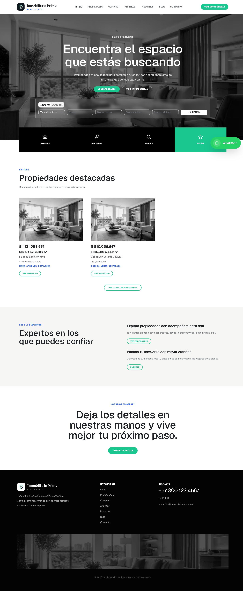
/comprar, /arrendar, /vender-mi-propiedad y /propiedades.Ruta: /propiedades.
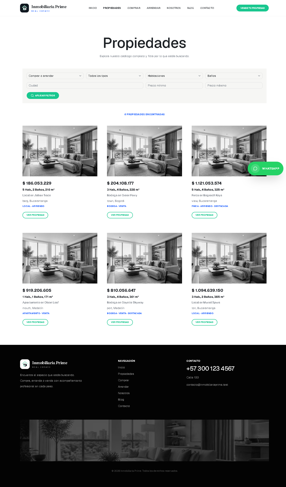
La paginación solo aparece cuando hay más de una página de resultados. Incluye botones de página anterior/siguiente, números de página (con puntos suspensivos … si hay muchas páginas), y conserva los filtros aplicados al cambiar de página. A diferencia del CRM, el catálogo público no tiene un selector de cantidad de resultados por página.
Existen dos buscadores distintos en el sitio, con campos ligeramente diferentes.
Ubicado en la sección principal del Home. Campos:
Al presionar “Buscar”, el sitio lo lleva al catálogo (/propiedades) con los filtros ya aplicados en la URL.
/propiedades, /comprar, /arrendar)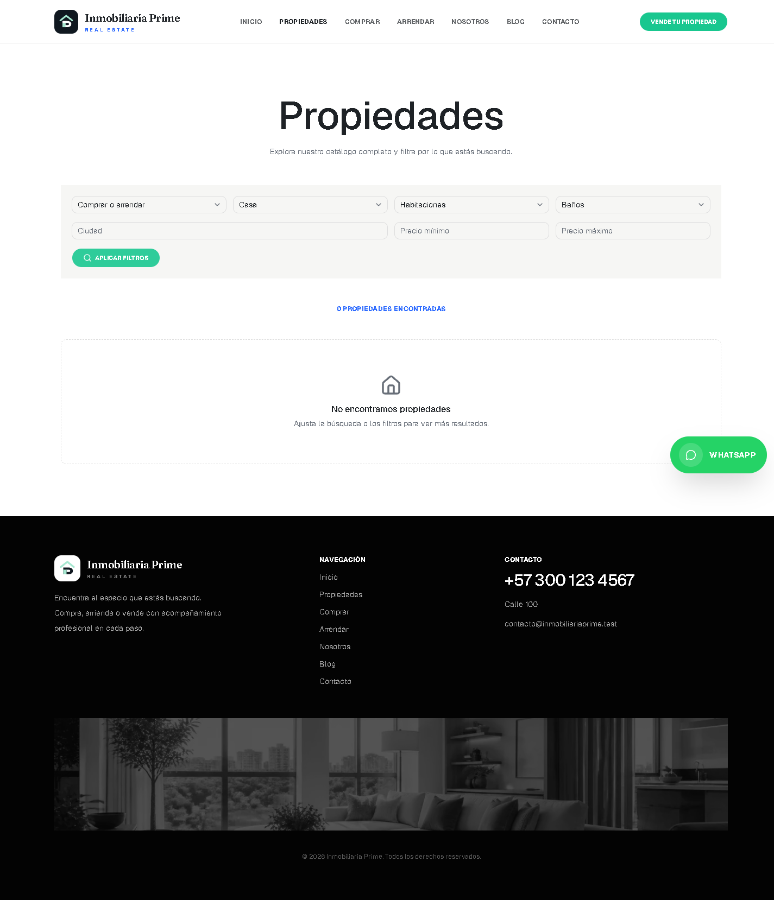
Campos disponibles:
/comprar ni en /arrendar, porque en esas páginas la operación ya viene fija.⚠️ Esta función no está disponible en la versión actual: el catálogo (
/propiedades,/comprar,/arrendar) no tiene un campo de filtro por barrio/zona, aunque el buscador rápido del Home sí lo tiene. Tampoco existe un filtro de rango de baños/habitaciones (solo “mínimo”).
Ruta: /comprar.
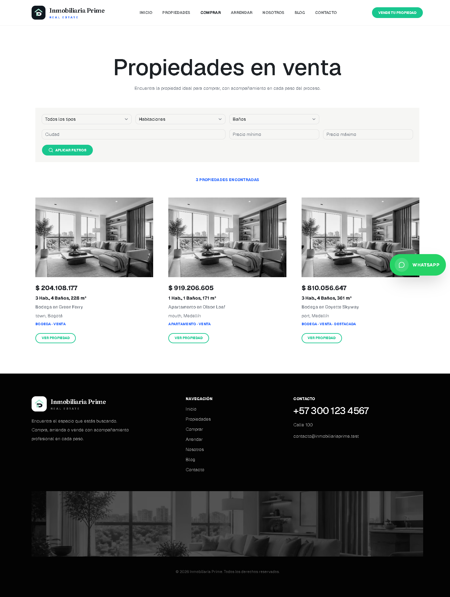
Esta página reutiliza el mismo catálogo del Capítulo 4, pero:
El resto del comportamiento (filtros de tipo, ciudad, precio, habitaciones, baños, paginación) es idéntico al catálogo general.
Ruta: /arrendar.
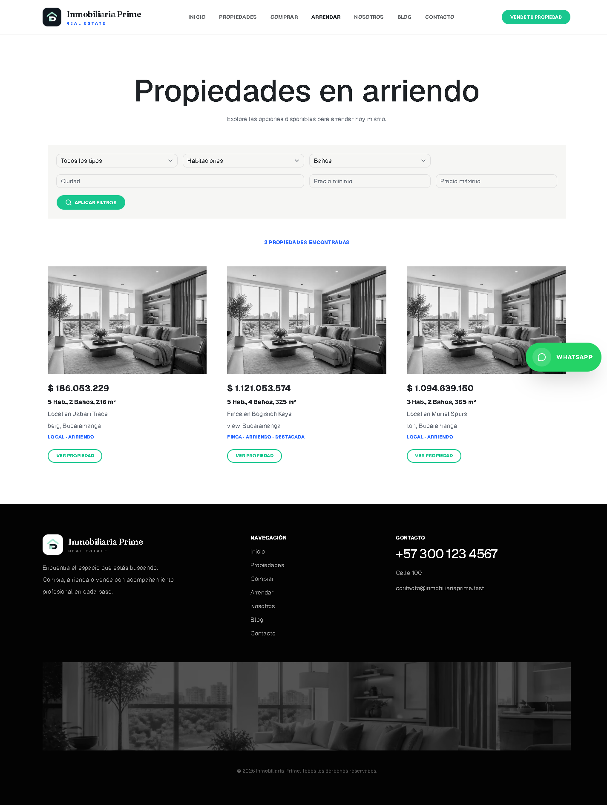
Igual que el capítulo anterior, pero mostrando únicamente propiedades en arriendo, con título “Propiedades en arriendo”.
Al hacer clic en cualquier tarjeta del catálogo, se abre la página de detalle (/propiedades/[slug]).
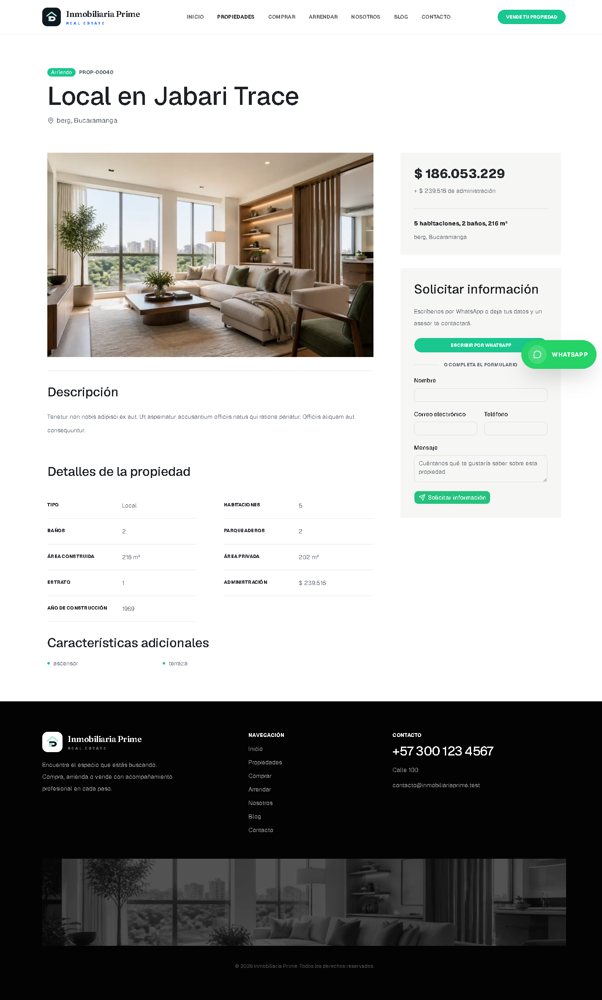
PROP-00001).Recorra la galería para ver todas las imágenes cargadas de la propiedad. La primera imagen (o la marcada como “portada” desde el CRM) es la que se usa como imagen principal en el catálogo.
Toda la información técnica del inmueble está en el bloque “Detalles de la propiedad” y, si aplica, en “Características adicionales”.
Ver Capítulo 9.
El panel de contacto incluye un botón “Escribir por WhatsApp” que abre WhatsApp con un mensaje prellenado:
“Hola, estoy interesado en la propiedad {código} - {título}.”
Este formulario aparece en la página de detalle de cada propiedad, debajo del botón de WhatsApp.
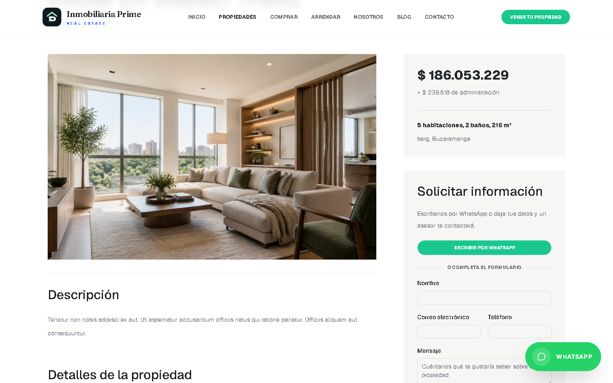
| Campo | Obligatorio | Notas |
|---|---|---|
| Nombre | Sí | — |
| Correo electrónico | Condicional | Debe indicar correo o teléfono (al menos uno) |
| Teléfono | Condicional | Debe indicar correo o teléfono (al menos uno) |
| Mensaje | No | Placeholder: “Cuéntanos qué te gustaría saber sobre esta propiedad” |
Botón: “Solicitar información”.
Al enviar el formulario correctamente aparece un mensaje de confirmación: “¡Gracias por tu mensaje!” / “Un asesor se pondrá en contacto contigo muy pronto.”
El contacto se registra automáticamente como un Lead dentro del CRM, con origen “Página web” y estado inicial “Nuevo”, quedando disponible para que el equipo comercial le dé seguimiento (ver Capítulo 22 — Leads).
Ruta: /vender-mi-propiedad. Pensada para propietarios que quieren vender o arrendar su inmueble a través de la inmobiliaria.
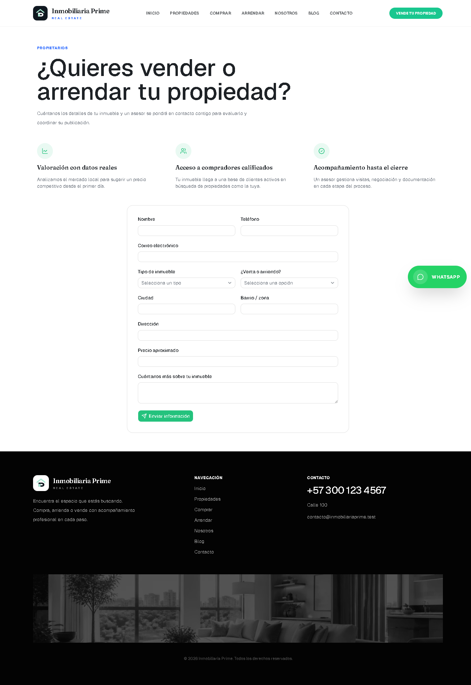
Desde cualquier página pública, use el botón “Vende tu propiedad” del encabezado, o cualquiera de los enlaces “Vender” repartidos por el sitio.
| Campo | Obligatorio |
|---|---|
| Nombre | Sí |
| Teléfono | Condicional (correo o teléfono) |
| Correo electrónico | Condicional (correo o teléfono) |
| Tipo de inmueble | Sí |
| ¿Venta o arriendo? | Sí |
| Ciudad | Sí |
| Barrio / zona | No |
| Dirección | No |
| Precio aproximado | No |
| Cuéntanos más sobre tu inmueble | No |
Botón: “Enviar información”.
Al enviarse correctamente: “¡Gracias por tu información!” / “Un asesor revisará los datos de tu inmueble y se pondrá en contacto contigo muy pronto.”
Se crea un Lead con origen “Página web” y estado “Nuevo”, igual que en el Capítulo 9, pero marcado internamente con la intención “Vender propiedad” para que el equipo sepa que se trata de un propietario captado, no de un comprador/arrendatario.
Ruta: /contacto.
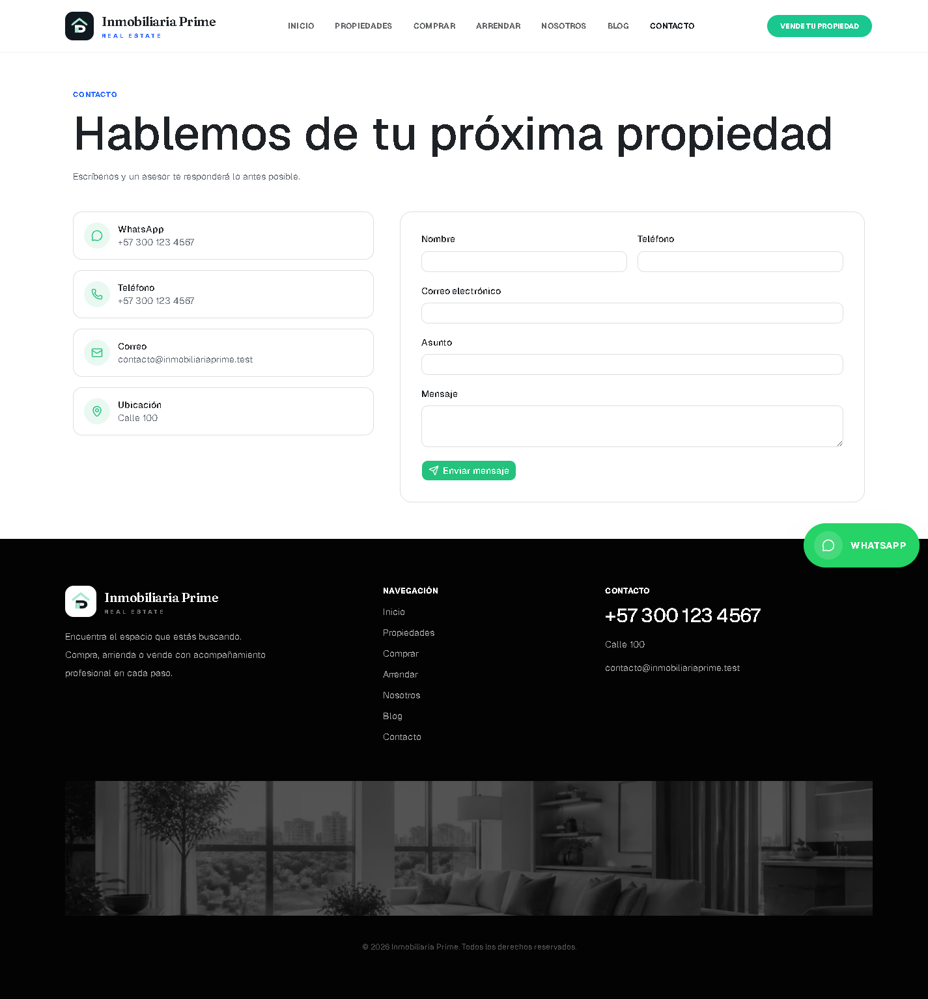
La página muestra tarjetas con: WhatsApp, Teléfono, Correo electrónico y Ubicación de la inmobiliaria.
| Campo | Obligatorio |
|---|---|
| Nombre | Sí |
| Teléfono | Condicional (correo o teléfono) |
| Correo electrónico | Condicional (correo o teléfono) |
| Asunto | No |
| Mensaje | Sí |
Botón: “Enviar mensaje”.
Confirmación: “¡Gracias por escribirnos!” / “Te responderemos a la brevedad posible.” También genera un Lead en el CRM (intención “Contacto general”).
Ruta: /nosotros.
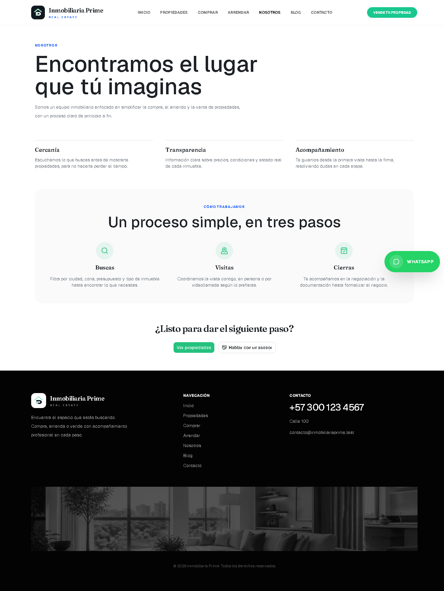
Página informativa, sin formularios. Incluye:
Ruta: /blog.
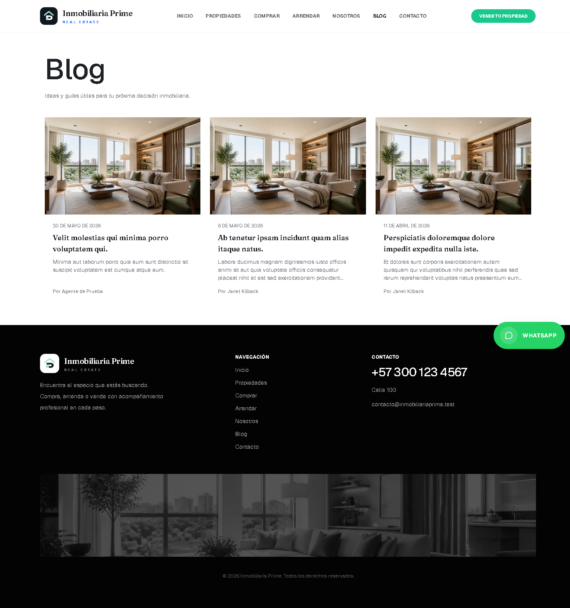
Cuadrícula de tarjetas de artículo, cada una con imagen, fecha de publicación, título, extracto y autor (“Por {nombre}”). Si todavía no hay artículos publicados, se muestra el mensaje “Todavía no hay artículos publicados.” Incluye la misma paginación del catálogo de propiedades.
Ruta: /blog/[slug].
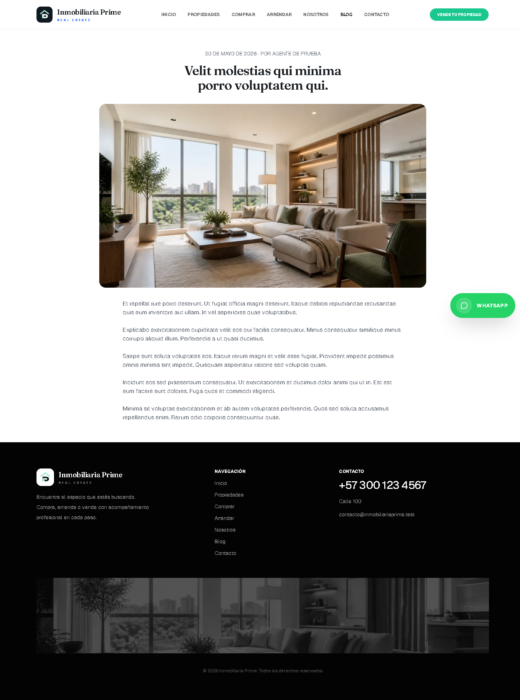
Muestra fecha y autor, título, imagen de portada, y el contenido completo del artículo. No tiene sección de comentarios.
El botón flotante de WhatsApp aparece en todas las páginas públicas, generalmente en la esquina inferior derecha.
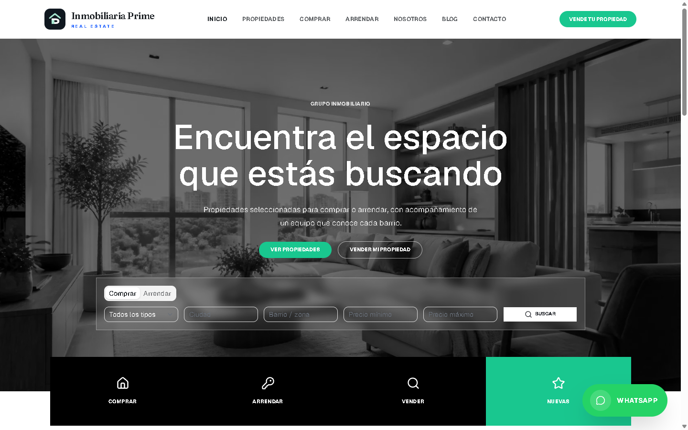
📌 El número de WhatsApp se configura una sola vez a nivel de todo el sitio; no se cambia por página.
Ruta: /login.
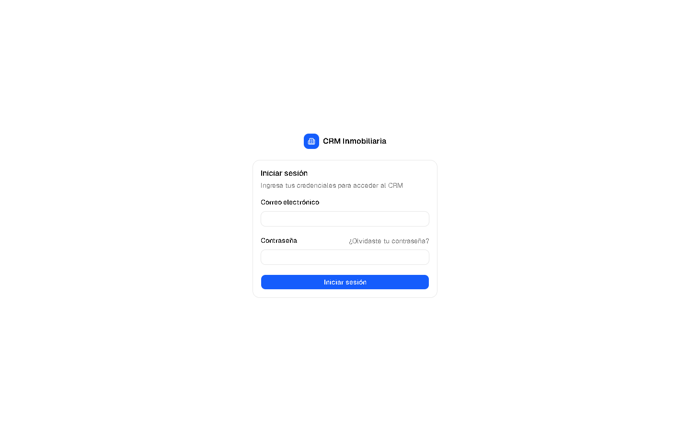
| Campo | Tipo |
|---|---|
| Correo electrónico | Texto (email) |
| Contraseña | Contraseña |
Botón: “Iniciar sesión”. Junto al campo de contraseña hay un enlace “¿Olvidaste tu contraseña?” (ver Capítulo 16).
Si las credenciales son incorrectas, se muestra un mensaje de error en rojo (el texto exacto depende del backend; si no hay uno específico, se muestra “No fue posible iniciar sesión”).
El seeder de datos de demostración crea estas cuentas (todas con la misma contraseña):
| Correo | Rol | Contraseña |
|---|---|---|
admin@crm.test |
admin | password |
agente@crm.test |
agente | password |
asistente@crm.test |
asistente | password |
⚠️ Importante: estas credenciales son exclusivamente para el entorno de pruebas/demostración. En un entorno de producción real, cada usuario del equipo debe tener su propia cuenta y contraseña personal (ver Capítulo 31 — Usuarios y Capítulo 43 — Buenas prácticas).
/login en el navegador.Esta función sí existe en el sistema, con un flujo de dos pasos.
Ruta: /forgot-password (se llega desde el enlace “¿Olvidaste tu contraseña?” del login).
Si el correo existe, llega un email con un enlace que expira en 60 minutos.
Ruta: /reset-password?token=...&email=... (se abre desde el enlace del correo).
⚠️ Si el enlace ya expiró o es inválido (falta el token o el correo en la URL), el sistema muestra: “Este enlace no es válido o ya expiró. Solicita uno nuevo para continuar.”, con un botón “Solicitar nuevo enlace”.
📌 Este flujo es distinto al cambio de contraseña estando ya conectado, que se hace desde Configuración y perfil y sí pide la contraseña actual.
Ruta: /dashboard. Es la primera pantalla que ve cualquier usuario tras iniciar sesión, sin importar su rol.
Cinco indicadores: Activas, Disponibles, Reservadas, Vendidas, Arrendadas.
Ocho indicadores: Leads nuevos, Clientes activos, Visitas de hoy, Visitas próximas, Oportunidades abiertas, En negociación, Cierres del mes, Tareas pendientes.
Tarjeta destacada: “Valor estimado del pipeline (oportunidades abiertas)”, con la suma de todas las oportunidades abiertas, en pesos colombianos.
Gráfico de barras horizontales titulado “Embudo inmobiliario”, que representa el recorrido: Lead → Contactado → Propiedad recomendada → Visita → Negociación → Cierre, mostrando cuántos registros hay en cada etapa.
📌 El Dashboard es idéntico para los tres roles: no cambia según quién inicia sesión, ya que solo consulta información (ver Capítulo 2).
Ruta: /properties. Es uno de los módulos centrales del CRM.
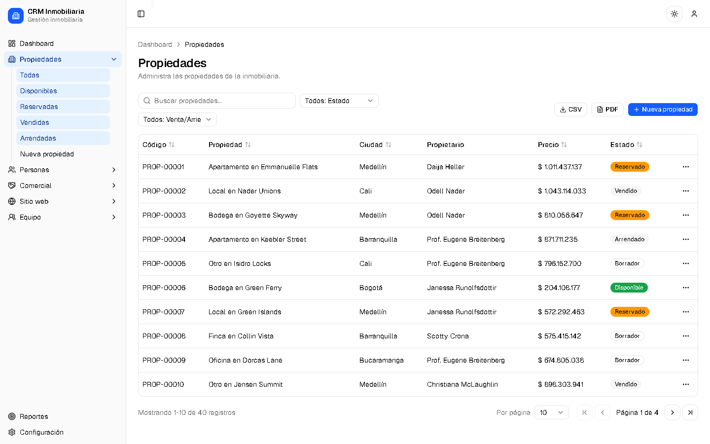
Columnas de la tabla: Código, Propiedad (título), Ciudad, Propietario, Precio, Estado, y una columna de acciones.
Selector de tamaño de página (10 / 25 / 50 / 100 registros).
Botones CSV y PDF en la parte superior del listado, que exportan exactamente los resultados filtrados en pantalla.
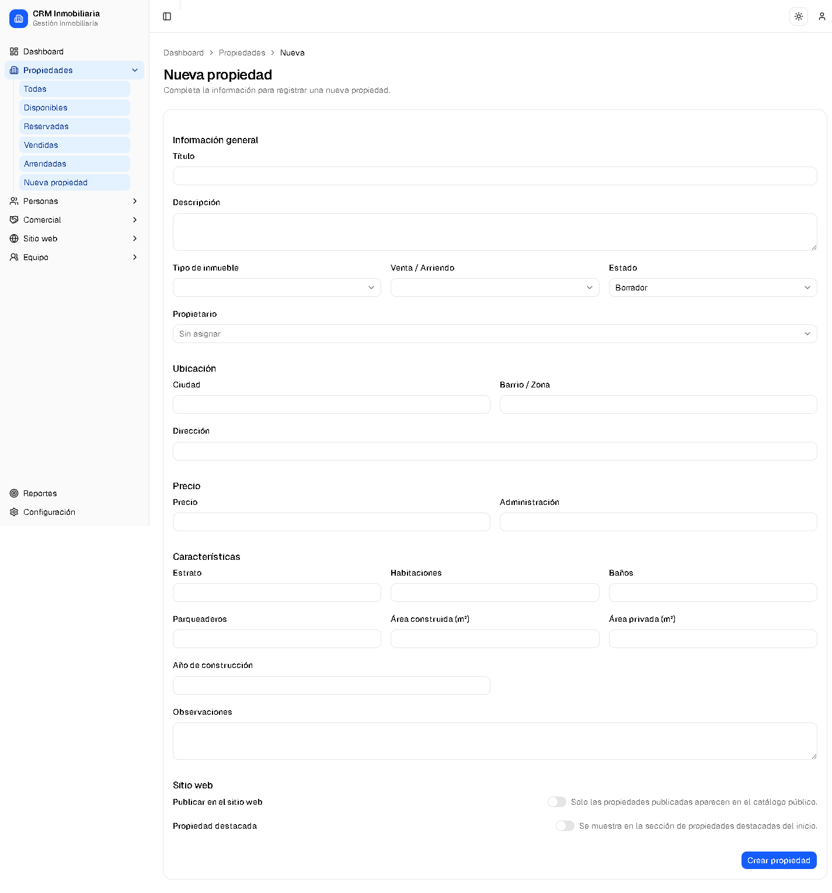
Botón “Nueva propiedad” (solo visible para admin/agente).
⚠️ Esta función no está disponible en la versión actual: el formulario de propiedad no tiene un campo de “características adicionales” de texto libre, aunque ese dato sí puede llegar a mostrarse en la web pública si fue cargado por otra vía. Desde el formulario del CRM no se puede editar directamente.
Con el interruptor “Publicar en el sitio web” activado y el Estado en Disponible o Reservado, la propiedad aparece automáticamente en /propiedades, /comprar o /arrendar según su tipo de operación.
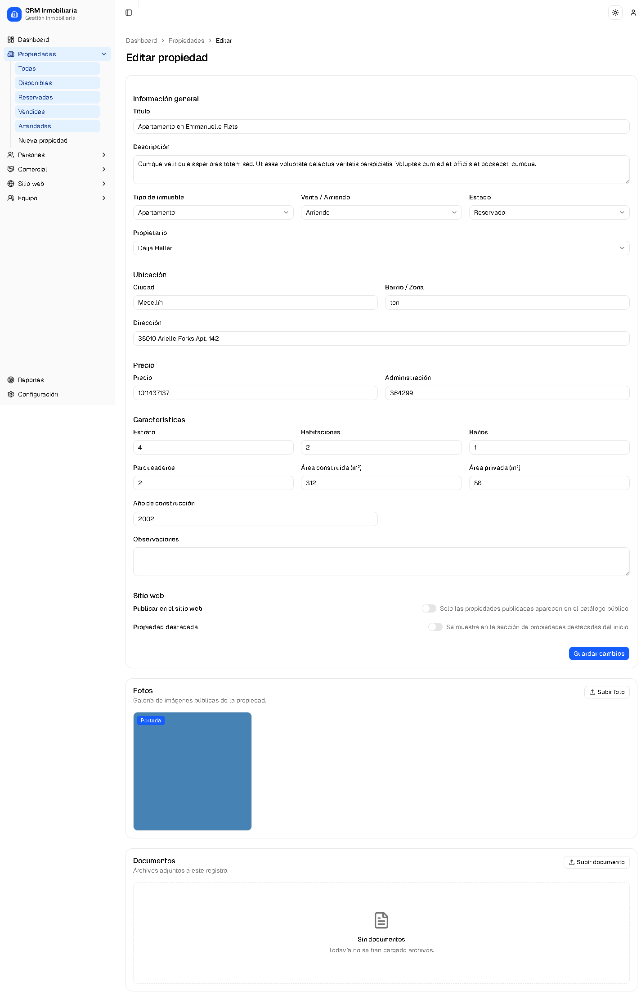
Abra la propiedad desde el listado (clic sobre la fila o “Editar” en el menú de acciones). Los mismos campos del formulario de creación quedan disponibles para modificar. Botón: “Guardar cambios”.
Se controla con el interruptor “Publicar en el sitio web” dentro del formulario de edición — no existen botones independientes de “Publicar” y “Despublicar” en el listado.
Se controla con el interruptor “Propiedad destacada” dentro del formulario de edición.
Ver la lista completa en Capítulo 39 — Estados del sistema.
Solo el rol Administrador ve la opción “Eliminar” en el menú de acciones de cada fila. Al presionar, se abre un cuadro de confirmación: “¿Eliminar este registro?” / “Esta acción eliminará ‘{título}’ de forma permanente. No se puede deshacer.”, con botón de confirmación “Eliminar”.
Dentro de la vista de edición de una propiedad existe el panel “Fotos”.
Botón “Subir foto” (solo admin/agente). Formatos permitidos: JPG, JPEG, PNG, WEBP, máximo 5 MB por imagen.
Cada imagen puede marcarse como portada con el botón de estrella “Marcar como portada” (admin/agente). La imagen marcada como portada muestra la insignia “Portada” y es la que se usa como imagen principal en el catálogo público.
No se documentó en este manual un control visual de arrastrar-y-soltar para reordenar imágenes manualmente en la interfaz revisada; el orden de visualización depende del campo interno sort_order de cada imagen.
Solo el rol Administrador ve el botón de eliminar (ícono de papelera) sobre cada imagen. Agente y Asistente pueden ver las imágenes pero no eliminarlas.
Las imágenes cargadas aparecen en la galería de la página de detalle pública de la propiedad (Capítulo 8), en el orden configurado, con la portada como primera imagen.
Ruta: /owners.
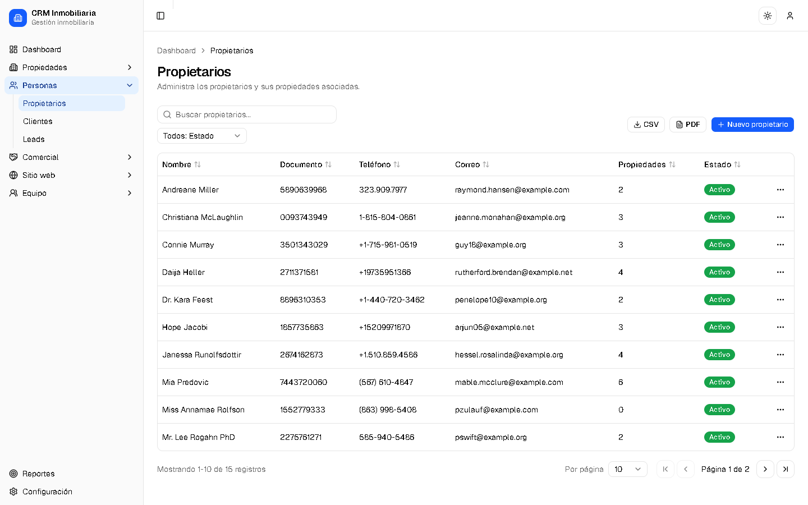
Columnas: Nombre, Documento, Teléfono, Correo, Propiedades (cantidad asociada), Estado, acciones.
Buscador “Buscar propietarios…”, filtro “Estado” (Activo/Inactivo).
Botón “Nuevo propietario”. Campos: Nombre (obligatorio), Documento, Teléfono, WhatsApp, Correo electrónico, Estado (Activo/Inactivo), Dirección, Notas.
Mismo patrón que Propiedades: “Editar” para admin/agente, “Eliminar” solo para admin.
La columna “Propiedades” del listado muestra cuántas propiedades tiene asociadas cada propietario. La relación se establece desde el formulario de la propiedad (campo “Propietario”), no desde la ficha del propietario.
Botones CSV/PDF.
Ruta: /clients.
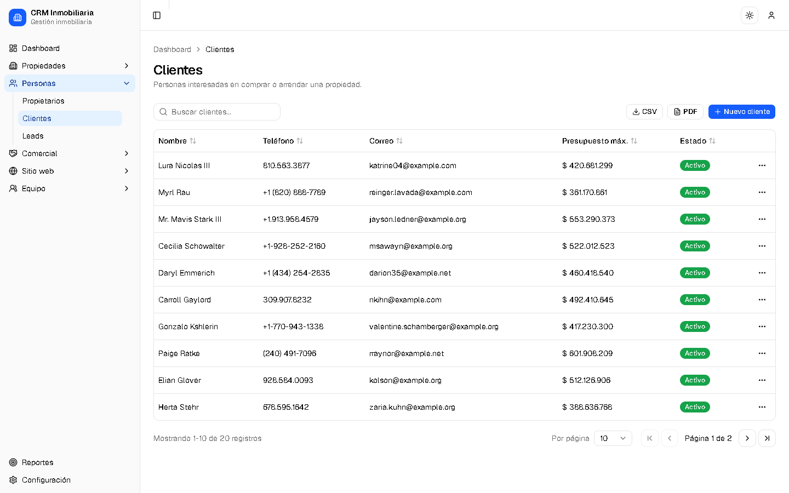
Columnas: Nombre, Teléfono, Correo, Presupuesto máx., Estado, acciones.
Buscador “Buscar clientes…”. Este módulo no tiene un filtro adicional por dropdown (solo búsqueda de texto).
Botón “Nuevo cliente”. Formulario agrupado en tres bloques:
Mismo patrón que los módulos anteriores.
Activo (success) / Inactivo (secondary).
Botones CSV/PDF.
Ruta: /leads.
Un lead es una persona que ha mostrado interés pero que todavía no necesariamente se ha convertido en cliente. Por ejemplo, alguien que solicitó información sobre una propiedad desde el sitio web.

Columnas: Nombre, Teléfono, Origen, Estado, acciones.
Un lead puede provenir de: Página web, WhatsApp, Llamada, Referido, Redes sociales, Portal inmobiliario, Manual, Otro.
Un lead puede estar en: Nuevo, Contactado, Calificado, Descartado, Convertido.
Dropdown “Origen”.
Botón “Nuevo lead”. Campos: Nombre (obligatorio), Teléfono, Correo, Origen (obligatorio), Estado (obligatorio), Notas.
Solo Admin.
Botones CSV/PDF.
Cuando un lead deja de ser solo un interesado y ya está listo para trabajarse formalmente como cliente comercial (por ejemplo, después de confirmar su interés real por teléfono).
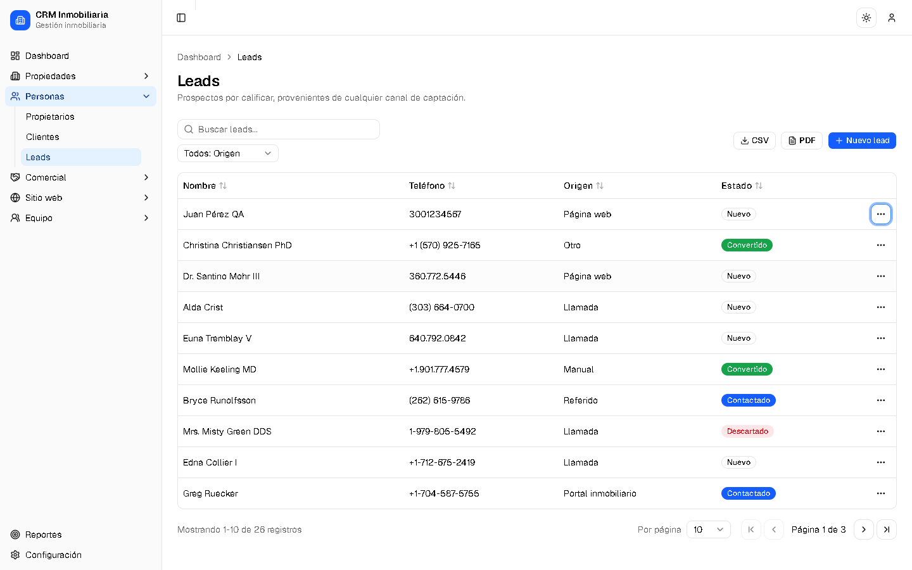
En el menú de acciones de la fila del lead (o en su detalle), presione el botón “Convertir a cliente” (ícono de una persona con un check). Este botón no aparece si el lead ya tiene estado “Convertido”, ni para el rol Asistente.
/leads.⚠️ Esta función no está disponible en la versión actual: los campos de interés comercial del nuevo cliente (tipo de interés, presupuesto, zonas de interés, tipo de inmueble buscado) no se completan automáticamente desde el lead, porque el lead no guarda esos datos. Deberá completarlos manualmente en la ficha del cliente si lo desea.
Ruta: /opportunities. Representa el pipeline comercial: cada negocio potencial con un cliente.
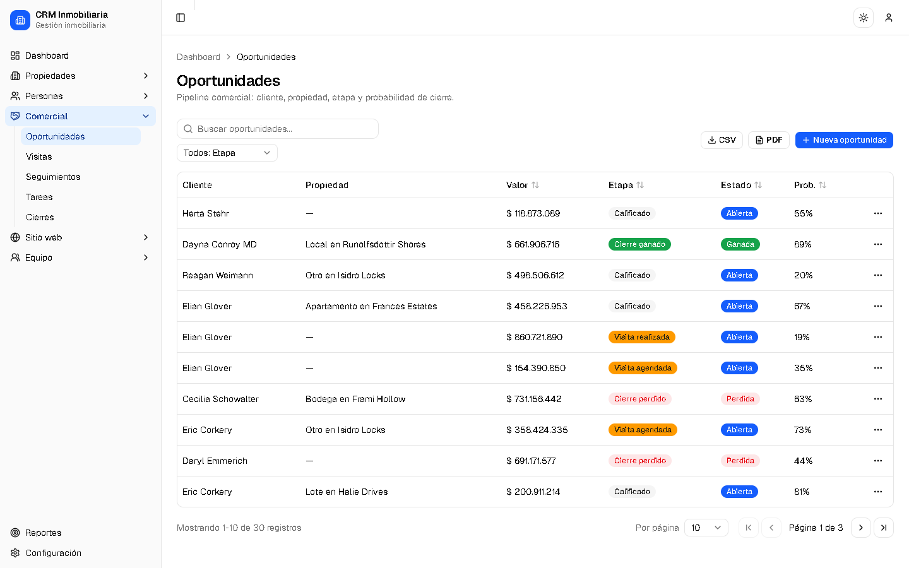
Columnas: Cliente, Propiedad, Valor, Etapa, Estado, Prob. (probabilidad %), acciones.
stage)Nuevo → Contactado → Calificado → Propiedades enviadas → Visita agendada → Visita realizada → Negociación → Cierre ganado / Cierre perdido.
status)Se calcula automáticamente a partir de la etapa: mientras la etapa no sea un cierre, el estado es “Abierta”; si la etapa pasa a “Cierre ganado”, el estado cambia a “Ganada”; si pasa a “Cierre perdido”, cambia a “Perdida”. No existe un campo de estado editable de forma independiente — se mueve cambiando la etapa.
Dropdown “Etapa”.
Botón “Nueva oportunidad”. Campos: Cliente (obligatorio), Propiedad (opcional — al elegirla, autocompleta el propietario), Etapa (obligatoria), Valor estimado, Probabilidad % (0-100), Próxima acción, Fecha estimada de cierre, Notas.
Solo Admin.
Botones CSV/PDF (también existe una exportación específica para oportunidades cerradas, ver Capítulo 28 — Cierres).
Ruta: /visits.

Columnas: Propiedad, Cliente, Fecha y hora, Estado, acciones.
Pendiente, Confirmada, Realizada, Cancelada, Reprogramada, No asistió.
Dropdown “Estado”.
Botón “Nueva visita”. Campos:
| Campo | Obligatorio |
|---|---|
| Propiedad | Sí |
| Cliente | Sí |
| Fecha y hora | Sí |
| Estado | Sí (por defecto “Pendiente”) |
| Observaciones | No |
| Resultado | No |
| Seguimiento posterior | No |
Después de realizada la visita, edite el registro y complete los campos “Resultado” y “Seguimiento posterior”, y actualice el Estado a “Realizada”, “Cancelada”, “Reprogramada” o “No asistió” según corresponda.
Solo Admin elimina; CSV/PDF disponibles para todos los roles.
Ruta: /activities. Registra el historial de contacto con clientes, leads u oportunidades.
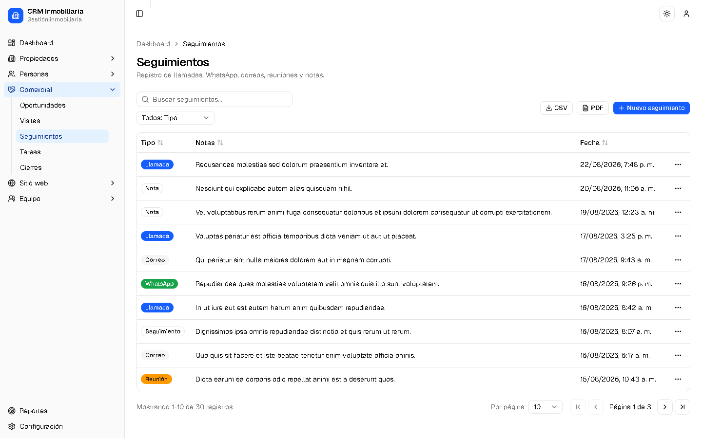
Llamada, WhatsApp, Correo, Reunión, Nota, Seguimiento.
Columnas: Tipo, Notas (resumen), Fecha, acciones. Filtro dropdown “Tipo”.
Botón “Nuevo seguimiento”. Campos: Tipo (obligatorio, por defecto “Nota”), Fecha (obligatoria), Notas (obligatorias).
El historial de seguimientos permite reconstruir toda la conversación que ha tenido el equipo con un cliente, lead u oportunidad: qué se habló, cuándo y por qué medio, para no repetir gestiones ni perder contexto entre agentes.
Ruta: /tasks.
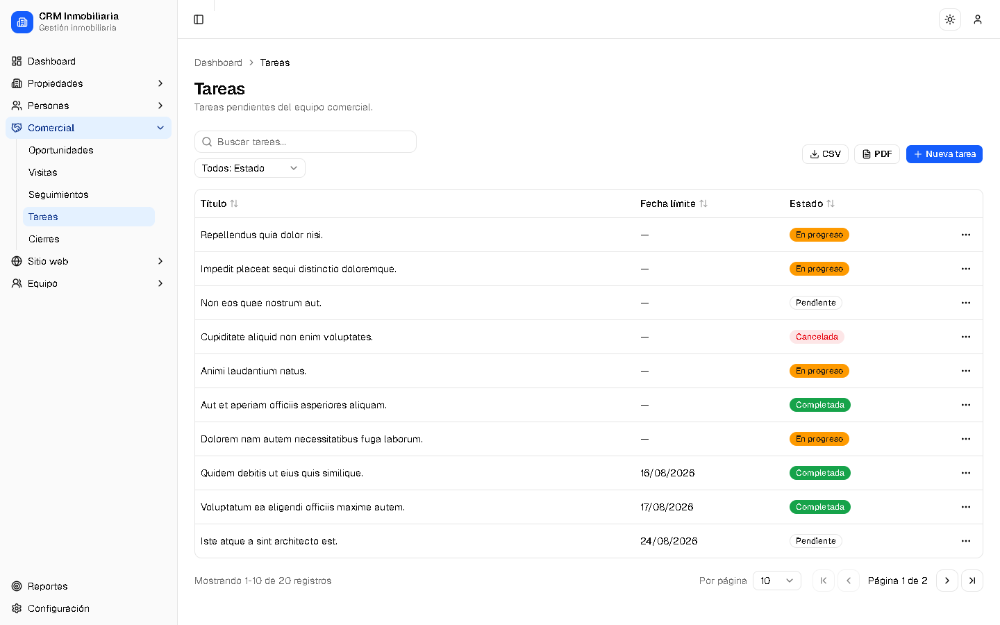
Columnas: Título, Fecha límite, Estado, acciones. Filtro dropdown “Estado”.
Pendiente, En progreso, Completada, Cancelada.
Botón “Nueva tarea”. Campos: Título (obligatorio), Fecha límite, Estado (por defecto “Pendiente”), Descripción.
⚠️ Esta función no está disponible en la versión actual: las tareas no tienen campo de prioridad. No existe un indicador visual de “alta/media/baja prioridad” en ningún lugar del sistema.
Edite la tarea y cambie su Estado a “Completada”.
Ruta: /closings. Módulo de solo lectura.
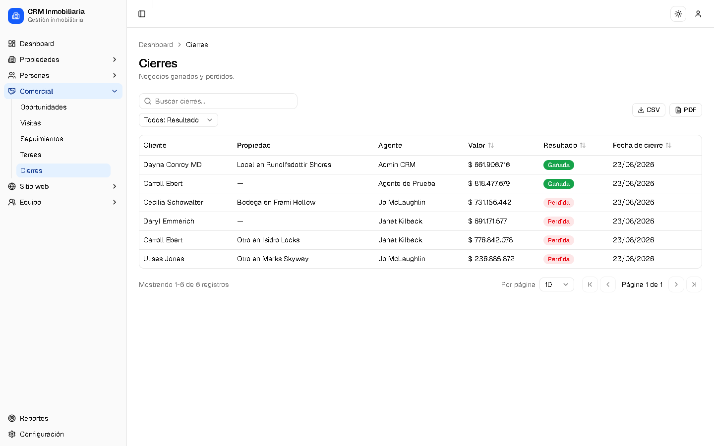
No existe un módulo de “Cierre” independiente: esta pantalla es una vista derivada de las Oportunidades cuya etapa llegó a “Cierre ganado” o “Cierre perdido” (ver Capítulo 24). Por eso no tiene botón de crear, ni opciones de editar o eliminar por fila.
Cliente, Propiedad, Agente, Valor, Resultado (Ganada/Perdida), Fecha de cierre.
Dropdown “Resultado” (Ganada / Perdida).
Botones CSV/PDF, independientes de la exportación general de oportunidades.
No existe una sección de menú llamada “Documentos” por sí sola. Los documentos se administran dentro de la ficha de cada registro, mediante un panel llamado “Documentos”.
El panel de documentos está disponible únicamente en la vista de edición de: Propiedades, Propietarios, Clientes y Oportunidades.
⚠️ Esta función no está disponible en la versión actual: Leads, Visitas, Tareas, Seguimientos y Blog no tienen panel de documentos adjuntos.
Botón “Subir documento”. Formatos permitidos: PDF, JPG, JPEG, PNG, DOC, DOCX, XLS, XLSX, hasta 10 MB.
Cualquier rol puede descargar los documentos ya cargados.
Solo el rol Administrador puede eliminar un documento.
⚠️ Advertencia: no cargue en el sistema información que no deba quedar almacenada permanentemente (por ejemplo, documentos con datos personales sensibles que no sean estrictamente necesarios para la gestión comercial o legal del inmueble).
Ruta: /blog-posts.
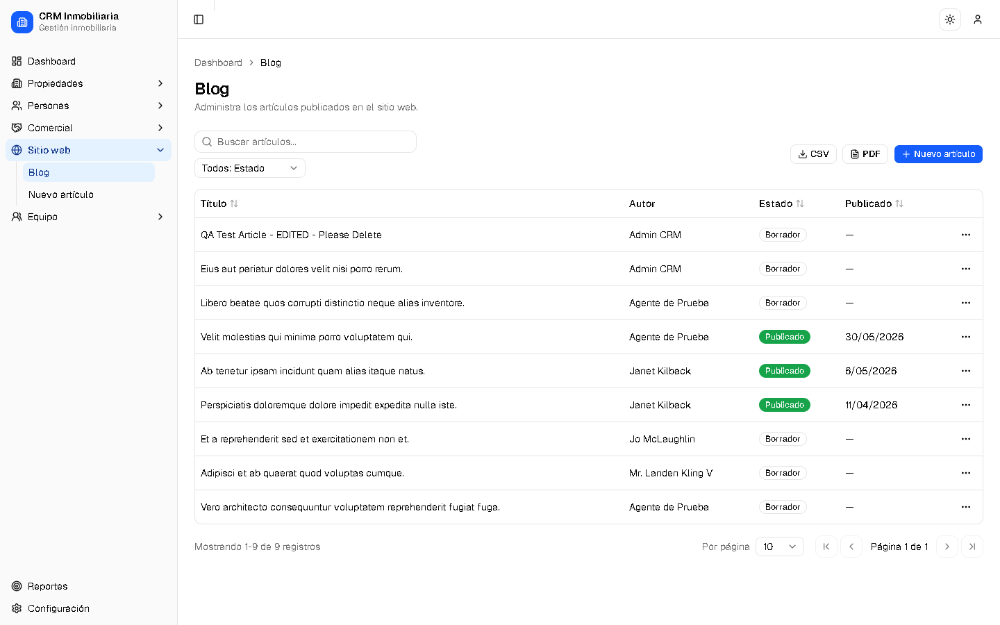
Columnas: Título, Autor, Estado, Publicado (fecha), acciones. Filtro dropdown “Estado” (Borrador/Publicado).
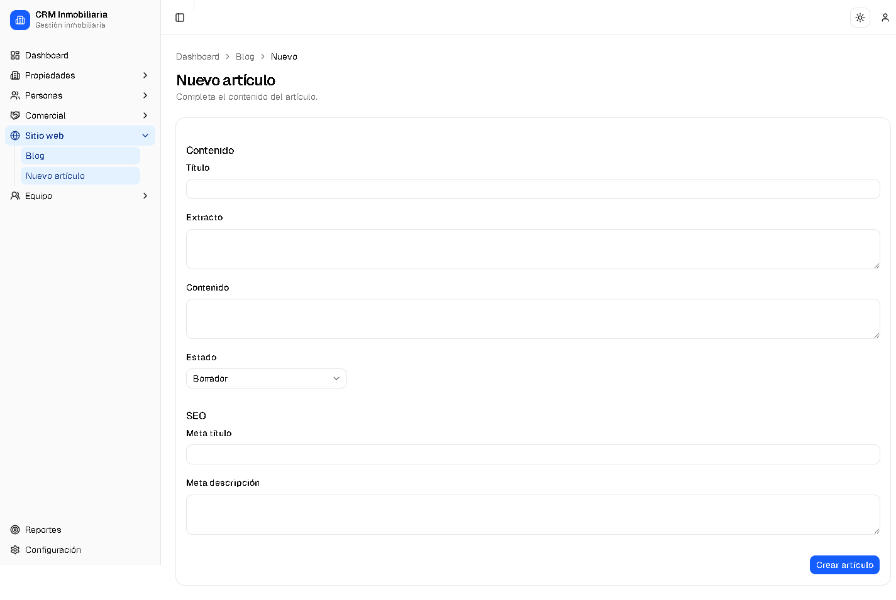
Botón “Nuevo artículo”. Campos agrupados:
⚠️ Esta función no está disponible en la versión actual, tal como está redactada en el requerimiento: no es posible cargar la imagen destacada durante la creación del artículo. El flujo real es: primero se crea el artículo (sin imagen) y, una vez creado, se abre automáticamente su edición, donde sí aparece la tarjeta “Portada” con el botón “Subir imagen” / “Cambiar imagen”.
Al cambiar el Estado a “Publicado” y guardar, el sistema fija automáticamente la fecha de publicación al momento actual.
Disponible solo en la vista de edición del artículo (no en la de creación), mediante la tarjeta “Portada”.
Un artículo aparece en /blog únicamente cuando su estado es “Publicado” y su fecha de publicación ya pasó.
Ruta: /team/users. Visible solo para el rol Administrador.
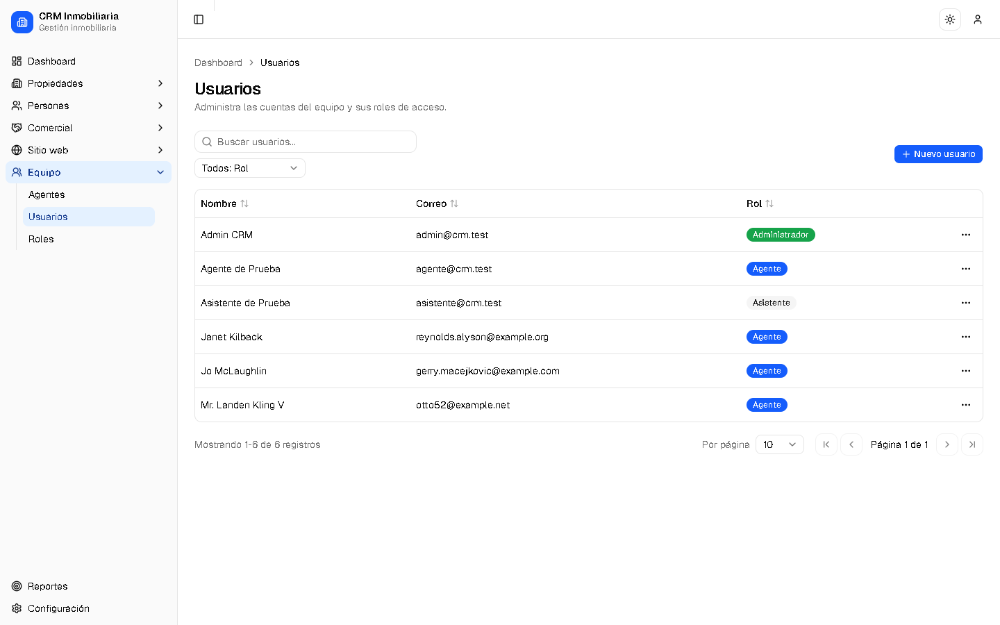
Columnas: Nombre, Correo, Rol (insignia), acciones. Filtro dropdown “Rol” (Administrador/Agente/Asistente).
Botón “Nuevo usuario”. Campos: Nombre (obligatorio), Correo electrónico (obligatorio, único), Contraseña (obligatoria, mínimo 8 caracteres), Rol (Administrador/Agente/Asistente, por defecto “Agente”). Botón: “Crear usuario”.
Campos: Nombre, Correo electrónico, Nueva contraseña (opcional — déjela vacía para no cambiarla), Rol. Botón: “Guardar cambios”.
Disponible para cualquier usuario excepto usted mismo: el botón “Eliminar” no aparece en la fila correspondiente a su propia cuenta, para evitar que un administrador se elimine a sí mismo accidentalmente.
⚠️ Importante: aunque no puede eliminarse ni cambiar su propio rol, sí puede eliminar o cambiar el rol de otros administradores — el sistema no impide dejar la inmobiliaria sin ningún administrador si hay más de uno y se eliminan entre sí. Gestione estas cuentas con cuidado.
Ruta: /team/agents. Visible solo para Administrador. Es una vista de solo lectura, no un formulario.
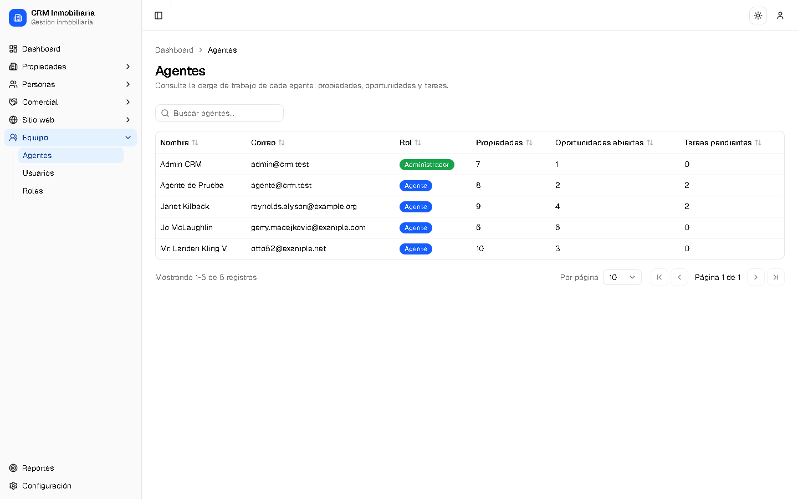
Nombre, Correo, Rol, Propiedades (cantidad asignada), Oportunidades abiertas, Tareas pendientes.
Esta pantalla no tiene botones de crear/editar/eliminar. El mensaje que muestra el propio sistema cuando la lista está vacía lo confirma: “Los agentes se crean desde la sección Usuarios.” Es decir, un “agente” aquí es simplemente cualquier usuario con rol Admin o Agente — no existe una entidad “Agente” separada de “Usuario”.
Ruta: /team/roles. Visible solo para Administrador. Es una pantalla informativa, no un editor: no se pueden modificar permisos desde aquí.
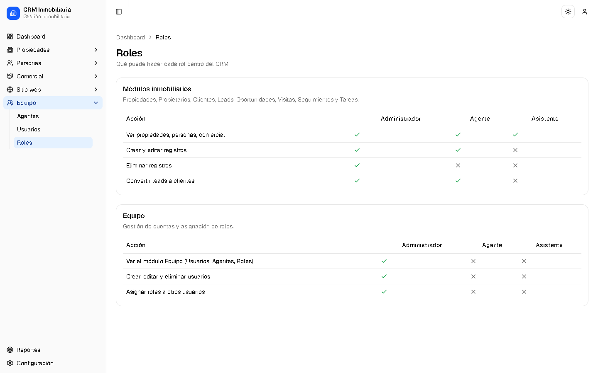
| Permiso | Admin | Agente | Asistente |
|---|---|---|---|
| Ver propiedades, personas, comercial | ✅ | ✅ | ✅ |
| Crear y editar registros | ✅ | ✅ | ❌ |
| Eliminar registros | ✅ | ❌ | ❌ |
| Convertir leads a clientes | ✅ | ✅ | ❌ |
| Permiso | Admin | Agente | Asistente |
|---|---|---|---|
| Ver el módulo Equipo (Usuarios, Agentes, Roles) | ✅ | ❌ | ❌ |
| Crear, editar y eliminar usuarios | ✅ | ❌ | ❌ |
| Asignar roles a otros usuarios | ✅ | ❌ | ❌ |
Esta matriz coincide exactamente con el comportamiento real verificado del sistema (ver Capítulo 2).
Ruta: /reports. Los tres reportes son de solo lectura, cada uno con su propia tabla y sus propios botones de exportación.

Qué mide: cantidad y valor total del inventario, agrupado por estado (Borrador, Disponible, Reservado, Vendido, Arrendado, Inactivo). Cuándo usarlo: para saber cuánto inventario activo tiene la inmobiliaria y su valor total en cada etapa. Filtros: ninguno. Cómo interpretarlo: compare la columna “Cantidad” con “Valor total” para identificar en qué estado se concentra el mayor valor del portafolio.
Qué mide: negocios ganados y perdidos de los últimos 6 meses (ventana fija). Cuándo usarlo: para evaluar la tendencia reciente de cierre de negocios. Filtros: ninguno visible en la interfaz (el backend admite un parámetro de meses, pero la pantalla actual no expone ese control). Cómo interpretarlo: compare “Ganados” contra “Perdidos” mes a mes, y observe la columna “Valor ganado” para el impacto económico real.
Qué mide: por cada usuario con rol Admin o Agente — propiedades asignadas, cierres totales (ganados + perdidos), valor cerrado (solo ganados) y tareas pendientes. Cuándo usarlo: para revisiones de desempeño individual o repartición de carga de trabajo. Filtros: ninguno. Cómo interpretarlo: un agente con muchas tareas pendientes y pocos cierres puede necesitar apoyo o redistribución de cuentas.
CSV y PDF, seleccionables con botones independientes en cada listado.
| Módulo | CSV | |
|---|---|---|
| Propiedades | ✅ | ✅ |
| Propietarios | ✅ | ✅ |
| Clientes | ✅ | ✅ |
| Leads | ✅ | ✅ |
| Oportunidades | ✅ | ✅ |
| Cierres (oportunidades cerradas) | ✅ | ✅ |
| Visitas | ✅ | ✅ |
| Seguimientos | ✅ | ✅ |
| Tareas | ✅ | ✅ |
| Blog | ✅ | ✅ |
| Reportes (los 3) | ✅ | ✅ |
| Documentos | ❌ | ❌ |
| Usuarios | ❌ | ❌ |
| Agentes | ❌ | ❌ |
⚠️ Esta función no está disponible en la versión actual: Documentos, Usuarios y Agentes no tienen botón de exportación.
Ruta: /settings.
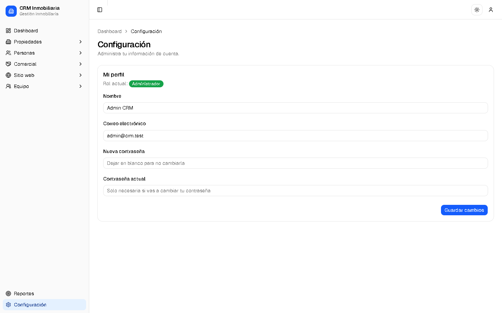
| Campo | Obligatorio |
|---|---|
| Nombre | Sí |
| Correo electrónico | Sí |
| Nueva contraseña | No (déjela vacía para no cambiarla) |
| Contraseña actual | Solo si va a cambiar la contraseña |
La tarjeta también muestra su rol actual como insignia (Administrador/Agente/Asistente), sin poder modificarlo usted mismo.
Si deja el campo “Nueva contraseña” vacío, el sistema guarda solo los cambios de nombre/correo y no exige la contraseña actual. Si escribe una nueva contraseña pero no indica la actual, verá el error: “Ingresa tu contraseña actual para poder cambiarla”.
Confirmación de éxito: “Perfil actualizado correctamente”.
Propietario
↓
Crear propietario (Capítulo 20)
↓
Crear propiedad y asociarla al propietario (Capítulo 18)
↓
Completar ubicación, precio y características
↓
Subir fotografías (Capítulo 19)
↓
Activar "Publicar en el sitio web" y marcar Estado = Disponible
↓
Aparece en /propiedades, /comprar o /arrendar según su tipo
Lead (Capítulo 22) — nace en la web o se crea manualmente
↓
Contacto / seguimiento (Capítulo 26)
↓
Convertir a Cliente (Capítulo 23)
↓
Crear Oportunidad asociando Cliente + Propiedad (Capítulo 24)
↓
Agendar Visita (Capítulo 25)
↓
Registrar resultado de la visita
↓
Avanzar la etapa de la oportunidad (Negociación...)
↓
Cierre — Ganado o Perdido (Capítulo 28)
Visitante del sitio
↓
Página "Vender mi propiedad" (Capítulo 10)
↓
Completa el formulario (nombre + correo/teléfono + datos del inmueble)
↓
Se crea un Lead en el CRM (origen: Página web)
↓
El equipo comercial contacta al propietario (Seguimientos)
↓
Si prospera: se crea el Propietario y su Propiedad en el CRM
/propiedades, /comprar, /arrendar) usa filtros por tipo, ciudad, precio, habitaciones y baños (ver Capítulo 5).Para encontrar todas las oportunidades en etapa de negociación de un cliente específico:
status)Borrador → Disponible → Reservado → Vendido / Arrendado → Inactivo.
📌 Solo Disponible y Reservado son visibles públicamente (y solo si además está publicada y la fecha de publicación ya pasó).
listing_type)Venta, Arriendo.
property_type)Apartamento, Casa, Oficina, Local, Lote, Bodega, Finca, Otro.
status)Activo, Inactivo.
Origen: Página web, WhatsApp, Llamada, Referido, Redes sociales, Portal inmobiliario, Manual, Otro. Estado: Nuevo, Contactado, Calificado, Descartado, Convertido.
Etapa (stage): Nuevo, Contactado, Calificado, Propiedades enviadas, Visita agendada, Visita realizada, Negociación, Cierre ganado, Cierre perdido.
Estado (status, automático): Abierta, Ganada, Perdida.
Pendiente, Confirmada, Realizada, Cancelada, Reprogramada, No asistió.
type)Llamada, WhatsApp, Correo, Reunión, Nota, Seguimiento.
Pendiente, En progreso, Completada, Cancelada.
Borrador, Publicado.
Patrón general: “{Registro} {creado/actualizado/eliminado} correctamente”. Ejemplos: “Propiedad creada correctamente”, “Cliente actualizado correctamente”, “‘{nombre}’ eliminado correctamente”, “‘{nombre}’ convertido a cliente”, “Perfil actualizado correctamente”, “Contraseña actualizada correctamente”.
Patrón general: “No fue posible {crear/actualizar/eliminar/cargar} {el/la} {registro}”. Ejemplos: “No fue posible eliminar la propiedad”, “No fue posible convertir el lead”, “No fue posible iniciar sesión”, “No fue posible generar el archivo de exportación”.
Aparecen debajo de cada campo del formulario. Ejemplos: “El nombre es obligatorio”, “Correo inválido”, “La contraseña debe tener al menos 8 caracteres”, “Indica al menos un correo o un teléfono de contacto”, “El presupuesto máximo debe ser mayor o igual al mínimo”, “Ingresa tu contraseña actual para poder cambiarla”.
Cuando un rol sin permiso intenta una acción no disponible en su interfaz, el botón correspondiente directamente no aparece en pantalla (no se muestra un mensaje de “no autorizado” al usuario, porque la opción está oculta de antemano).
Antes de eliminar cualquier registro, o de convertir un lead, aparece un cuadro de diálogo de confirmación con el detalle de la acción y un botón para confirmarla o cancelarla.
| Problema | Posible causa | Qué hacer |
|---|---|---|
| No puedo crear un registro | Su rol es Asistente, que no tiene permiso de creación | Solicite a un Admin o Agente que lo cree, o pida que le asignen un rol con permiso de escritura |
| No veo el botón “Eliminar” | Es una restricción de permisos: solo el rol Administrador puede eliminar | Solicite a un administrador que elimine el registro |
| Una propiedad no aparece en la web | El interruptor “Publicar en el sitio web” está apagado, o el Estado no es Disponible/Reservado, o la fecha de publicación es futura | Edite la propiedad, active “Publicar en el sitio web” y verifique el Estado |
| No puedo cambiar mi contraseña | No escribió su contraseña actual al intentar establecer una nueva | Complete también el campo “Contraseña actual” en Configuración |
| Un archivo no se puede subir | El tipo de archivo o el tamaño no están permitidos | Para imágenes: use JPG/PNG/WEBP, máx. 5 MB. Para documentos: PDF/JPG/PNG/DOC/DOCX/XLS/XLSX, máx. 10 MB |
| No puedo convertir un lead | El lead ya fue convertido anteriormente, o su rol es Asistente | Verifique el estado del lead; si ya está “Convertido”, no es necesario volver a hacerlo |
| No veo el módulo “Equipo” | Su rol no es Administrador | Este módulo (Usuarios, Agentes, Roles) es exclusivo del rol Admin |
| Olvidé mi contraseña | — | Use “¿Olvidaste tu contraseña?” en el login (Capítulo 16) |
| El enlace de recuperación no funciona | El enlace expiró (validez de 60 minutos) o ya fue usado | Solicite un nuevo enlace desde “¿Olvidaste tu contraseña?” |
| No encuentro una propiedad/cliente en el listado | Hay un filtro activo que lo está ocultando | Revise los filtros aplicados o límpielos antes de buscar |
¿Cómo publico una propiedad? Cree o edite la propiedad, active el interruptor “Publicar en el sitio web” y asegúrese de que su Estado sea “Disponible” o “Reservado”. Ver Capítulo 18.
¿Cómo marco una propiedad como destacada? Dentro del formulario de edición de la propiedad, active el interruptor “Propiedad destacada”.
¿Cómo convierto un lead?
Desde /leads, use el botón “Convertir a cliente” en el lead correspondiente. Ver Capítulo 23.
¿Cómo agendo una visita?
Desde /visits, presione “Nueva visita” y complete propiedad, cliente y fecha/hora. Ver Capítulo 25.
¿Qué diferencia hay entre cliente y lead? Un lead es un interesado que aún no se ha calificado ni convertido; un cliente es un registro ya confirmado con el que se puede trabajar oportunidades comerciales formalmente.
¿Quién puede eliminar registros? Únicamente el rol Administrador.
¿Cómo exporto información? Aplique los filtros que necesite en el listado y presione el botón CSV o PDF. Ver Capítulo 35.
¿Cómo cambio mi contraseña? Vaya a Configuración, escriba la nueva contraseña y su contraseña actual, y presione “Guardar cambios”. Ver Capítulo 36.
¿Cómo publico un artículo del blog? Cree el artículo, guárdelo, y en su edición cambie el Estado a “Publicado” y suba la imagen de portada. Ver Capítulo 30.
¿Por qué una propiedad no aparece públicamente? Revise que esté publicada, en estado Disponible o Reservado, y que la fecha de publicación no sea futura. Ver Capítulo 41.
| Término | Significado |
|---|---|
| Lead | Persona que ha mostrado interés pero aún no se ha convertido en cliente. |
| Cliente | Persona con la que ya se trabaja comercialmente de forma confirmada. |
| Propietario | Persona dueña de un inmueble gestionado por la inmobiliaria. |
| Oportunidad | Un posible negocio comercial entre un cliente y (opcionalmente) una propiedad específica. |
| Pipeline | El conjunto de oportunidades abiertas, organizadas por etapa. |
| Cierre | Una oportunidad que llegó a su etapa final: ganada o perdida. |
| Propiedad destacada | Propiedad marcada para aparecer en la sección principal del sitio web. |
| Publicación | Acción de hacer visible una propiedad o artículo de blog en el sitio público. |
| Visita | Encuentro agendado entre un cliente y una propiedad, con un agente presente. |
| Seguimiento | Registro de un contacto realizado (llamada, WhatsApp, correo, reunión, nota). |
| Agente | Usuario del CRM con rol “Agente” o “Admin” que gestiona propiedades y clientes. |
| CRM | Sistema privado de administración y operación de la inmobiliaria. |
📌 Placeholder — completar con los datos reales de soporte de la inmobiliaria antes de entregar este manual al cliente final.
| Canal | Dato |
|---|---|
| Correo de soporte | [correo-de-soporte-pendiente] |
| Teléfono de soporte | [teléfono-de-soporte-pendiente] |
| Horario de atención | [horario-pendiente] |
Este anexo es de alto nivel, únicamente para dar contexto técnico general. No sustituye ni forma parte del manual de usuario.
┌───────────────────┐
│ Sitio web │
│ (público) │
└─────────┬─────────┘
│
┌─────────▼─────────┐
│ Sistema │
│ (API central) │
└─────────┬─────────┘
│
┌─────────▼─────────┐
│ CRM │
│ (privado) │
└───────────────────┘
El sitio web público y el CRM privado comparten la misma base de datos a través de un sistema central: lo que se crea o modifica en el CRM se refleja en el sitio web público (y viceversa, en el caso de los formularios que generan leads).